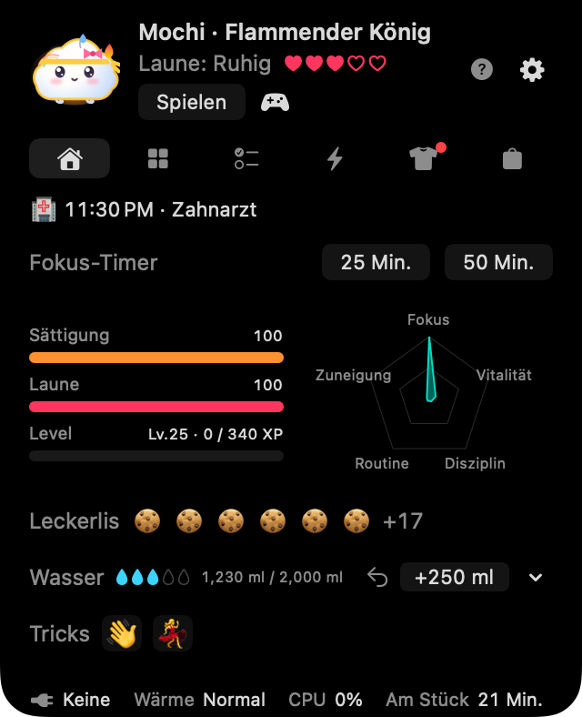
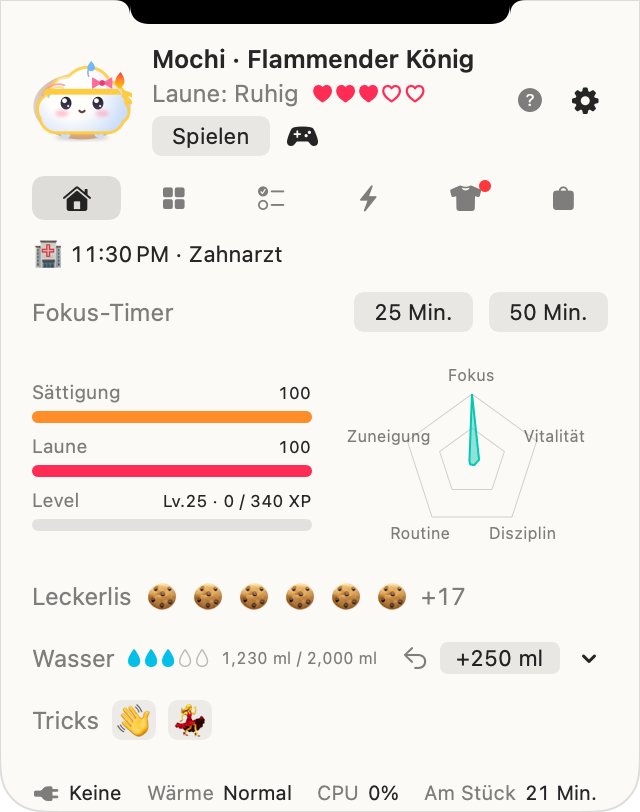
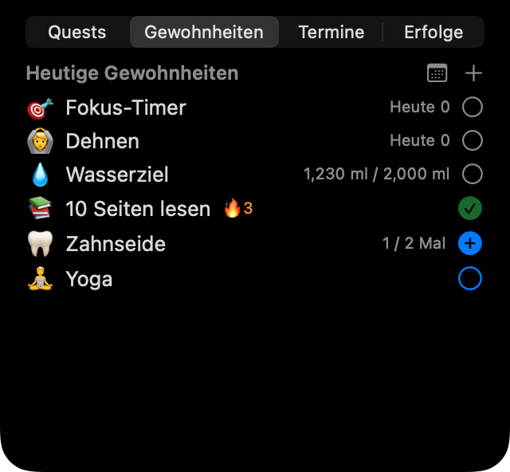

Klopf, klopf – hier ist Noki!
Ein weicher kleiner Freund, der neben der Notch deines MacBook wohnt. Während du arbeitest, erinnert er dich ans Trinken, Dehnen, an echte Pausen und an die Pläne des Tages. Pass auf dich auf, dann schlüpft er aus dem Ei und wächst mit dir.


Fünf Freunde, alle kostenlos
☁️ Mongsil
ein WolkenbabySeine Laune ist das Wetter: Nieselregen bei Hunger, Sonnenschein, sobald das Trinkziel erreicht ist.
🧶 Boksle
ein FellknäuelLiegt beim Laden flach auf dem Bauch; stellt die Ohren auf, wenn der Zeiger kommt.
🍮 Tangtang
ein PuddingSchmilzt mit tropfendem Karamell, wenn der Mac heiß wird; wackelt beim Laden vor Freude.
🌱 Kongkong
eine keimende BohneFunkelt, sobald das Trinkziel erreicht ist; das Blatt hängt, wenn er müde wird.
🌙 Mallo
ein Mondhasen-MarshmallowAb 21 Uhr leuchtet die Mondsichel auf seiner Stirn.
Saisonale Freunde
Mit Noki Plus triffst du in jeder Jahreszeit einen besonderen Freund, und er bleibt auch nach der Saison und nach Plus: Eunhaeng (ein Ginkgo-Mochi) und Danpung (ein Ahornblatt) im Herbst, Noonsongi (ein flauschiger Schneeball) und Hoppang (ein Dampfbrötchen mit Schal) im Winter.


Er atmet mit deinem Mac
Noki reagiert auf Akku, Laden, Wärme, Tastatur- und Mausaktivität und den Ruhezustand des Bildschirms – alles auf deinem Mac gelesen. Sein Gesicht zeigt dreizehn Gefühle, und wenn du es einschaltest, trägt er je nach Wetter draußen Schirm oder Schal.
Er kümmert sich um deinen Tag
💧 Trinken und Dehnen
Ein Glas mit einem Klick eintragen, eigene Becher anlegen, auch Getränke abseits vom Mac nachtragen. Sanfte Erinnerungen ans Dehnen nach langem Sitzen und Fokus-Timer mit 25 oder 50 Minuten.
🌱 Gewohnheiten und Pläne
Eigene Gewohnheiten nach Anzahl oder Zeit, ein Monatskalender, einfache Pläne mit Erinnerungen und – wenn du ihn verbindest – dein Mac-Kalender.
🏆 Quests und Erfolge
Drei Quests am Tag, 35 Erfolge sowie Wochen- und Monatsaufgaben, belohnt mit Snacks für neue Outfits.
🎾 Spielen
Streicheln, auf dem Bildschirm einen Ball werfen, drei Minispiele spielen oder per Code gegen Freunde antreten.



Leicht, und nur auf deinem Mac
Sein Atmen zeichnet nichts neu, deshalb liegt die CPU-Last im Ruhezustand bei fast 0 %, und er ruht, wenn der Bildschirm schläft. Dein Haustier und deine Daten bleiben auf deinem Mac: kein Konto, kein Server. Mehr in der Datenschutzerklärung.
Bald verfügbar
Mochi Noki wird gerade mit Freunden verfeinert. Sobald er im Mac App Store ist, sagen wir es hier und unter Neuigkeiten.
- Mac mit Apple Chip (M1 oder neuer), macOS 14 Sonoma oder neuer
- Auf einem Mac ohne Notch oder einem externen Bildschirm erscheint oben in der Mitte eine virtuelle Notch. Du kannst stattdessen auch ein Symbol in der Menüleiste wählen.
- Die fünf Freunde und alle Kernfunktionen sind kostenlos. Noki Plus (optional) bringt unbegrenzte Gewohnheiten, Nokis Monatsbrief und saisonale Freunde.

Verbring einen Tag mit Noki
und sag uns, welcher Freund dir am besten gefällt 💌
Alle Bilder stammen aus dem Zeichencode der App selbst.